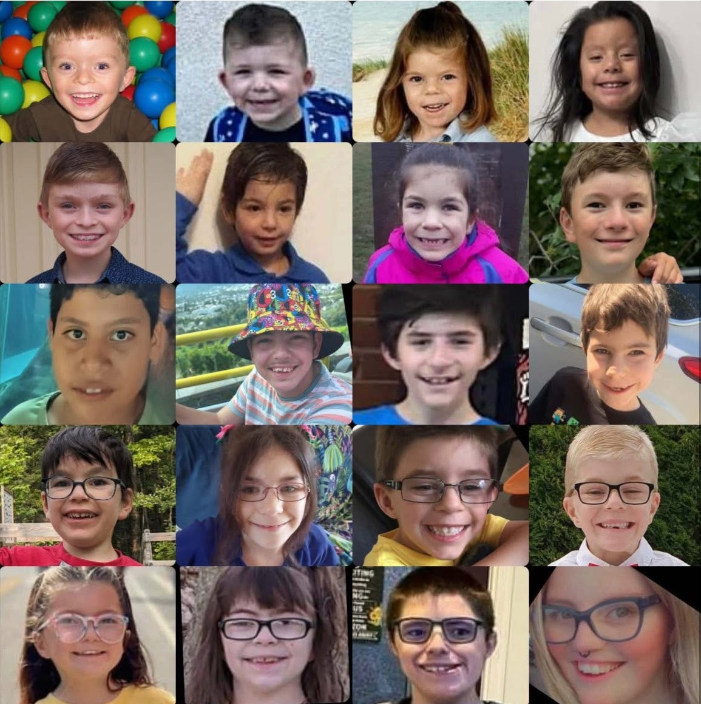
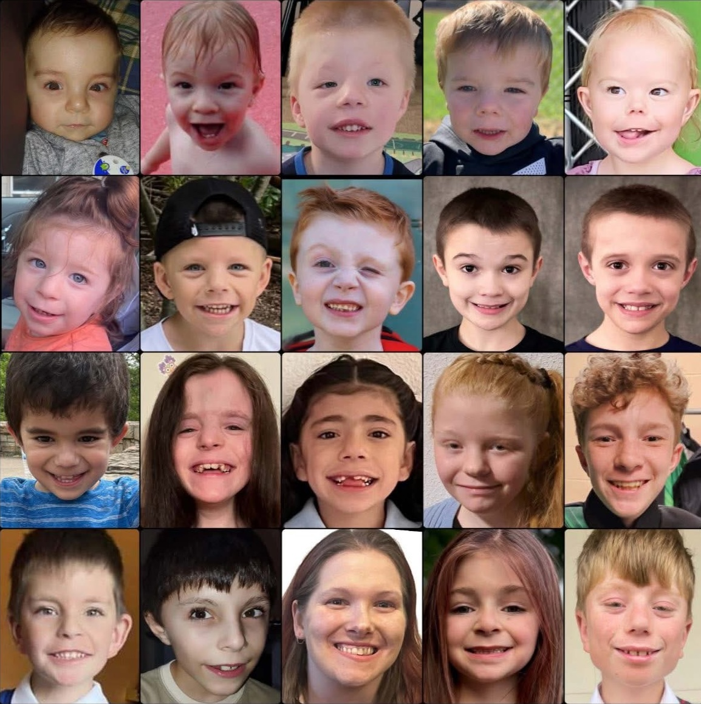
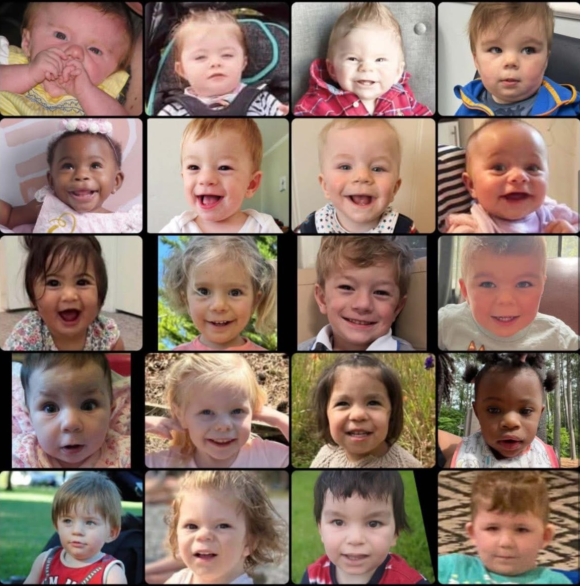

We are a family-led nonprofit dedicated to accelerating research into SETD5 Syndrome, a rare genetic condition, while building a global community of support, hope, and action.
"Every dollar brings us closer to answers."



SETD5 Syndrome is caused by changes (variants or deletions) in the SETD5 gene. This gene plays a critical role in brain development, and when it doesn't work as expected, it can lead to intellectual disability, autism spectrum disorder, behavioral differences, and speech delays.
Most cases arise spontaneously (not inherited), meaning families often have no prior history. SETD5 Syndrome was first described in 2014, and the global community of diagnosed individuals is still growing as genetic testing becomes more widespread.
Every person with SETD5 Syndrome is unique. This is a condition of beautiful complexity, and our mission is to fully understand it and support those living with it.
Learn More About the ConditionYour donations directly fund breakthrough research. Here is a snapshot of what is currently underway.
Researchers are mapping exactly how the SETD5 protein regulates gene expression in developing brain cells, the essential first step toward targeted therapies.
A first-of-its-kind longitudinal registry tracking development, health, and quality of life across hundreds of individuals with SETD5 Syndrome worldwide.
Using validated animal models, scientists are testing candidate compounds that may restore some SETD5 function, a critical step toward clinical trials.
SETD5 Syndrome Foundation was built by parents who refused to wait. Here is why we do this work.
"When our daughter was diagnosed at age three, we were handed a printout with almost no information and told to 'wait and see.' That was not good enough. We found other families online, we connected with researchers, and we realized: if we didn't build this foundation, no one would. Every dollar raised is a message to our kids: we see you, we believe in you, and we will not stop."
Research doesn't wait. Neither do our families. A donation today keeps scientists at the bench and gives hope to hundreds of families around the world.
Make a Donation Other Ways to GiveGet research updates, family resources, and foundation news delivered directly to your inbox. No spam, just meaningful updates.
We respect your privacy. Unsubscribe anytime.
SETD5 Syndrome (also called MRD23, or Mental Retardation, Autosomal Dominant 23) is a rare neurodevelopmental condition caused by changes in the SETD5 gene, located on chromosome 3p25.3.
The SETD5 gene provides instructions for making a protein that helps regulate which genes are turned on or off during brain development. When one copy of this gene has a variant or is partially deleted, the protein may not function properly, which can affect how the brain develops.
SETD5 Syndrome typically occurs as a de novo (new, spontaneous) change, meaning most affected individuals are the first in their family to carry it. It is not usually inherited from a parent, though familial cases are documented.
It is estimated to affect fewer than 1,000 people worldwide, though the true prevalence is likely higher, as many individuals remain undiagnosed.
SETD5 Syndrome presents differently in every person. Some individuals have mild features, while others may have more significant support needs. No two individuals are exactly alike.
Ranging from mild to moderate; affects learning and adaptive skills.
Expressive language is often more affected than understanding. Many children are minimally verbal early on.
Social communication differences, repetitive behaviors, and sensory sensitivities are common.
Hyperactivity, impulsivity, ADHD-like features, and sometimes anxiety or mood dysregulation.
Often present in infancy; can affect feeding, motor milestones, and gross motor skills.
Walking may be delayed; coordination challenges are common. Most children do walk independently.
Some individuals have subtle facial differences including widely spaced eyes, a broad forehead, or a prominent chin.
Occurs in a subset of individuals. Seizure types vary and are typically managed with medication.
Important: This information is for educational purposes only and does not constitute medical advice. Every individual with SETD5 Syndrome is unique. Please consult with a qualified genetics specialist or developmental pediatrician for personalized guidance.
Many families travel a long road before receiving a diagnosis of SETD5 Syndrome. Understanding this journey can help families advocate effectively.
Parents or a pediatrician notice developmental delays (often in speech, motor skills, or social development), typically in the first 1-3 years of life.
A referral to a developmental pediatrician, neurologist, or geneticist follows. Initial testing (MRI, metabolic panels) may be inconclusive.
Chromosomal microarray (CMA) or whole-exome sequencing (WES) is ordered. This is the testing that identifies SETD5 variants or deletions.
A pathogenic or likely pathogenic SETD5 variant is identified. Parents receive a formal diagnosis, often a moment of grief and relief at once.
Connecting with SETD5 Syndrome Foundation and other families is one of the most powerful steps after diagnosis. You are not alone.
We connect families with resources, community, and the latest research. Reach out; we respond to every message.
Contact the FoundationSETD5 Syndrome was only first described in scientific literature in 2014. The field is young, which means there is enormous potential for rapid progress with the right investment.
Our foundation funds research across the full pipeline: from understanding the basic biology of SETD5, to modeling the condition in animal systems, to developing and testing candidate therapies. We work closely with our Scientific Advisory Board to ensure every funded project is rigorous, collaborative, and moves us closer to helping families.
We are also committed to family-centered research, which means patients and families have a voice in setting research priorities.
These projects represent the cutting edge of SETD5 Syndrome science, made possible by families like yours.
Mapping the molecular role of the SETD5 protein in transcriptional regulation during early brain development, identifying downstream targets.
Longitudinal tracking of development, health outcomes, and quality of life in individuals with SETD5 Syndrome across 18+ countries.
High-throughput screening of FDA-approved compounds and novel molecules that may rescue SETD5-associated phenotypes in validated mouse models.
Analyzing whether the type or location of SETD5 variant (missense vs. truncating vs. deletion) predicts clinical severity or specific features.
Creating patient-derived stem cell lines and differentiating them into neurons to study SETD5 Syndrome in human cell systems for drug testing.
A prospective study examining the effectiveness of tailored behavioral and communication interventions in children with SETD5 Syndrome ages 2-8.
The SETD5 Syndrome field has progressed rapidly in a short time. Here is the story of that progress.
Researchers first identify SETD5 variants in individuals with unexplained intellectual disability.
Grozeva et al. publish the first paper formally characterizing SETD5 haploinsufficiency as a distinct syndrome.
Families from around the world connect for the first time, forming the community that would become the foundation of this organization.
A heterozygous Setd5 mouse model is validated, recapitulating key behavioral and neurological features of the human condition.
Families launch the foundation to accelerate research and provide community support to a growing global patient population.
Our SAB comprises leading scientists in neurodevelopmental genetics, epigenomics, and rare disease therapeutics who guide our research strategy.
We welcome inquiries from researchers interested in SETD5 Syndrome. Contact our research team to explore funding and collaboration opportunities.
Get in TouchOur next round of research grants opens soon. Your gift today helps us say "yes" to the science that matters most.
Donate to Research100% of your gift goes directly to SETD5 Syndrome research, family programs, and advocacy. We are a lean, volunteer-led organization.
Covers laboratory supplies for one day of research.
Funds one week of a research technician's time in the lab.
Sponsors one full month of a graduate student researcher's fellowship.
Funds a pilot research project from concept to preliminary data.
Want to give a different amount?
Give a Custom AmountMonthly donors are the backbone of our research program. A consistent, predictable stream of funding allows us to commit to multi-year research projects, the kind that produce real results.
Even $20/month adds up to $240 per year, enough to fund a full week of laboratory analysis.
Start a Monthly GiftCelebrate a loved one or honor someone's memory with a meaningful gift that funds research.
Many employers match charitable donations dollar-for-dollar. Check if your employer participates.
Leave a legacy that outlasts you. Contact us to learn about including the Foundation in your estate plan.
Partner with us on research sponsorship, event sponsorship, or cause-marketing campaigns.
Run a race, host a dinner, celebrate a birthday and turn any moment into a fundraiser. We'll give you everything you need to get started.
Start a FundraiserWe need help with events, social media, family outreach, and more. Share your skills and time to help us grow our mission.
VolunteerYour experience with SETD5 Syndrome is powerful. Sharing it raises awareness, helps newly diagnosed families feel less alone, and drives donations.
Share Your StorySETD5 Syndrome Foundation is a registered 501(c)(3) nonprofit organization. All donations are tax-deductible to the extent permitted by law. EIN: [Your EIN Here]
When our children were diagnosed with SETD5 Syndrome, we received a name but little else. There was no patient registry, no foundation, no family community to speak of. Research was scattered, slow, and underfunded.
In 2021, a group of parents from the United States, Europe, and Australia came together with a single conviction: that a rare disease this newly understood could move from mystery to treatment faster than anyone thought possible, if families organized, raised money, and partnered directly with science.
We hired no executives. We kept our overhead low. We put every dollar toward research and families. And we built the SETD5 Syndrome Foundation.
Today, we fund 12 active research projects, support hundreds of families across 18 countries, and have helped produce 24 peer-reviewed publications on SETD5 Syndrome. We are just getting started.
To accelerate research into SETD5 Syndrome and support the global community of individuals, families, and clinicians affected by this rare genetic condition.
A world where every person with SETD5 Syndrome has access to effective treatments, early diagnosis, and a thriving community of support.
We fund rigorous, peer-reviewed research guided by our Scientific Advisory Board.
Every decision is made with the lived experience of families at the center.
SETD5 Syndrome affects families everywhere. Our community has no borders.
Our board is entirely composed of parents, caregivers, and allies who volunteer their time, skills, and passion to this mission.
Whether you are newly diagnosed, a researcher, a donor, or a journalist, we respond to every message.
Send Us a Message